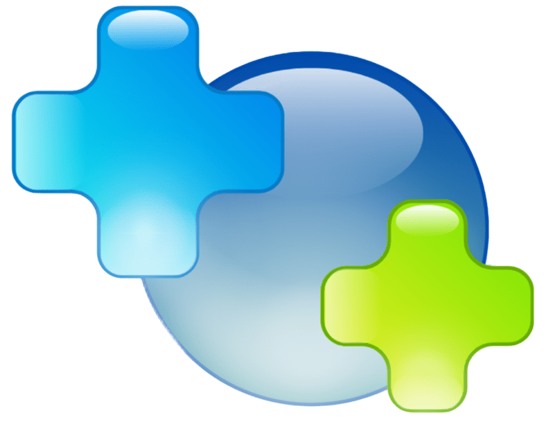

🧠 Quiz Educativo
Agora é hora de testar o que você aprendeu! Responda às perguntas abaixo sobre automedicação e descubra quanto você aprendeu durante sua visita ao Pharmind.
Pergunta 1 de 10

Educação em Saúde • Uso Consciente de Medicamentos
Agora é hora de testar o que você aprendeu! Responda às perguntas abaixo sobre automedicação e descubra quanto você aprendeu durante sua visita ao Pharmind.
Pergunta 1 de 10